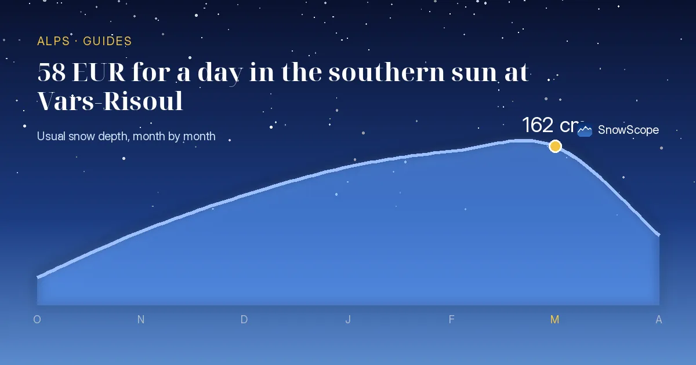

58 EUR لنهار فالسخونية ديال الجنوب فـ Vars-Risoul
تقدر تسكي فمنطقة Forêt Blanche بـ 58 EUR لنهار ولا 298 EUR لفورفي ديال 6 أيام هاد الشتوة. هاد المحطة فجنوب فرنسا كتوفر 131 كم ديال البيست بـ علو ديال 1090 م. قبل ما تحجز، خاصك تعرف واش التلج ديال بداية الموسم كيستاهل فلوسك.
شوف توقعات التلج مباشرة ديال Vars-Risoul فالتطبيق ديال SnowScopeالعلو ديال التلج، التنبيهات والخريطة 3D، فابور.
تكلفة الرحلة لـ Forêt Blanche
إيلا كنتي بحالي وكتشوف فكل يورو، ثمن الفورفي هو أول حاجة كتشوف فيها. لشتوة 2026-27، فورفي ديال نهار واحد للبالغين فمنطقة Vars-Risoul كيدير 58 EUR. إيلا بغيتي تبقى كثر، فورفي ديال 6 أيام للبالغين فـ Forêt Blanche كيدير 298 EUR. هادشي كيعطيك الدخول لمنطقة سكي فيها 38 مصعد و 131 كم ديال البيست.
المحطة كاينة بين 1632 م و 2722 م. هاد العلو مهم حيت التلج ديال بداية الموسم كيكون بحال القمار. نتا كتخلص على منطقة كبيرة، فخاصك تضمن بلي البيست محلولين. فالتاريخ ديالنا ديال التلج اللي فاتو فـ 46 شتوة، العلو ديال التلج المعتاد فدجنبر فالسفح ديال المصاعد هو 33 سم، وهادشي ماشي بزاف لبداية الموسم.

واش التلج ديال دجنبر كافي؟
إيلا شفنا التاريخ ديالنا ديال التلج من 1980-81 لـ 2025-26، العلو ديال التلج كيتبدل بزاف. فوسط الجبل، اللي هو 2177 م، العلو المعتاد فدجنبر هو 51 سم. ولكن، فدجنبر اللي كيكون فيه التلج قليل، اللي كيوقع مرة فكل 10 شتوات، هاد العلو كيقدر يهبط لـ 20 سم. فالفوق ديال المصاعد فـ 2722 م، الأمور كتبان أحسن بـ علو معتاد ديال 77 سم.
القاعدة فـ 1632 م هي أضعف بلاصة. فدجنبر اللي التلج فيه قليل، العلو تما كيقدر يوصل لـ 9 سم. إيلا كان عندك الزهر وكان دجنبر عامر تلج، اللي كيوقع حتى هو مرة فكل 10 شتوات، تقدر تشوف 61 سم فلقاعدة و 160 سم فالفوق. الشتوة اللي فاتت، فدجنبر 2025-26، المعدل كان 25 سم فلقاعدة و 57 سم فالفوق، وهادشي كان شوية تحت الأرقام المعتادة.
الفرص فبداية ولا نهاية دجنبر
التوقيت ديال الرحلة ديالك فدجنبر كيغير الفرص ديالك باش تلقى تلج زوين. فالأسبوع الأول من الشهر، من 1 لـ 7 دجنبر، كاين غير 30 % ديال الشتوات اللي فيها 30 سم ولا كثر فلقاعدة. فآخر أسبوع، من 22 لـ 28 دجنبر، هاد النسبة ديال الشتوات كطلع لـ 74 %. إيلا بغيتي تشوف 50 سم ولا كثر فلقاعدة، هادشي كيوقع غير فـ 30 % ديال الشتوات اللي فاتو حتى فهاديك السيمانة اللخرة.
وسط الجبل هو رهان آمن لفلوسك. من 15 لـ 21 دجنبر، كاين 85 % ديال الشتوات اللي فيها على الأقل 30 سم ديال التلج فـ 2177 م. الفوق ديال المصاعد هو اللي موثوق كثر، بـ 91 % ديال الشتوات اللي فيها 30 سم ولا كثر من 8 لـ 14 دجنبر. فآخر الشهر، الفوق كيكون فيه 50 سم ولا كثر فـ 93 % ديال الشتوات اللي فاتو.
مقارنة مع Serre Chevalier
كيستاهل تشوف الجار الكبير، Serre Chevalier. هاديك المحطة عندها منطقة سكي أكبر بـ 157 كم ديال البيست و 70 مصعد. لرحلة من الافتتاح لـ 18 دجنبر 2026، فورفي ديال 6 أيام للبالغين تما كيدير 276,00 EUR. هادشي أرخص من الفورفي ديال 298 EUR فـ Vars-Risoul لهاد التواريخ. ولكن، من 19 دجنبر 2026 لـ 1 يناير 2027، ثمن فورفي 6 أيام فـ Serre Chevalier كيطلع لـ 345,00 EUR.
Serre Chevalier عندها حتى تلج كثر فالفوق. أعلى مصعد عندها فـ 2765 م، فين العلو المعتاد فدجنبر هو 111 سم. فالتاريخ ديالنا ديال التلج، Serre Chevalier عندها 30 سم ولا كثر فالفوق ديالها فـ 100 % ديال الشتوات اللي فاتو من 8 دجنبر للفوق. فلقاعدة، اللي هي هابطة فـ 1219 م، العلو المعتاد هو 30 سم، اللي كيشبه لـ 33 سم فلقاعدة ديال Vars-Risoul.
التوجهات الأخيرة والتوقعات
التاريخ ديالنا ديال التلج كيبين بلي التلج ديال دجنبر فوسط الجبل تحسن مع الوقت. فوسط أول 15 شتوة (1980-81 لـ 1994-95)، المعدل ديال دجنبر كان 42 سم. فوسط آخر 15 شتوة (2011-12 لـ 2025-26)، هاد المعدل طلع لـ 62 سم. هادشي أخبار زوينة للسكايرية اللي خايفين من السخونية ديال الجنوب.
من 13 نونبر 2026، التلج قليل بزاف، بـ 0 سم فلقاعدة و 10 سم فالفوق. ولكن، التوقعات ديال جوج سيمانات لوسط الجبل والفوق كتعطي مجال ديال 62 لـ 86 سم ديال تلج جديد. هادشي يقدر يعطي بداية واعرة للموسم إيلا صدقات التوقعات. أول نهار معتاد ديال التلج اللي كيبقى فالفوق هو 19 أكتوبر، يعني الجبل ديجا معطل على هاد التاريخ.
نصايح للي كيتزلجو
- حجز رحلتك للسيمانة ديال 22 لـ 28 دجنبر إيلا بغيتي 74 % ديال الفرصة باش تلقى 30 سم ديال التلج فلقاعدة.
- بقى فـ البيست اللي فوق وسط الجبل فـ 2177 م فين العلو المعتاد هو 51 سم بلاصة 33 سم فالتحت.
- قارن الفورفي ديال 298 EUR مع الثمن ديال بداية الموسم ديال 276,00 EUR فـ Serre Chevalier إيلا كنتي مسافر قبل 18 دجنبر.
- شوف النشرة ديال الانهيارات قبل ما تخرج من البيست، خصوصا إيلا جاو 62 لـ 86 سم ديال التلج الجديد اللي متوقع.
- شري الفورفي ديال Forêt Blanche من السيت الرسمي باش تضمن بلي خديتي الثمن المزيان ديال 58 EUR لنهار.
خرائط أخرى (مواقع خارجية)
المراجع والمصادر
- Risoul, official ski pass page, Forêt Blanche 2026-27 risoul.labellemontagne.com/fr/hiver/forfaits/risoul-foret-blanche/
- Risoul, official 6-day Forêt Blanche pass page 2026-27 risoul.labellemontagne.com/fr/hiver/forfaits/6-jours-foret-blanche/
- Serre Chevalier, official booking site, ski passes 2026-27 reservation.serre-chevalier.com/achetez-vos-ski-pass-serre-chevalier-et-autres-prestations.html
- SnowScope, December snow at three heights and today's snow map snowscope.app/
على هاد الأرقام
الأرقام ديال التلج: التاريخ ديال التلج ديال SnowScope، 46 شتوة اللي فاتت (1980-81 حتى ل 2025-26) فتلاتة ديال العلوات فكل محطة (موديل ديال اللي فات مصحح بالعلو: تقدير لمنطقة، ماشي قياسات ديال المحطة)؛ أرقام دجنبر محسوبة من العلو اليومي ديال التلج فهاد الشتوات. التلج دابا والتوقعات ديال جوج سيمانات: توقعات SnowScope (من ECMWF و GFS، مجال ماشي وعد). التيليسييجات والبيستات: الخريطة ديال OpenSkiMap. الأثمنة: الصفحات الرسمية اللي لتحت، متشافة نهار 2026-11-13؛ الأثمنة تقدر تتبدل، شوف قبل ما تحجز.
النشرات الرسمية ديال الانهيارات: Météo-France – Bulletin d'estimation du risque d'avalanche
كيفاش تستاشهد بهاد المقال
للبحث، التعليم ولا الصحافة: الأرقام والرسومات تقدر تعاود تخدم بيهم بحرية تحت CC BY 4.0 مع هاد الاستشهاد.
SnowScope (2026), 58 EUR لنهار فالسخونية ديال الجنوب فـ Vars-Risoul, https://snowscope.app/blog/ar/2026/11/vars-risoul-foret-blanche-december-ski-price-snow-2026.html, تشاف ف 2026-11-14
SnowScope (Atlas Labs). (2026, November 14). 58 EUR لنهار فالسخونية ديال الجنوب فـ Vars-Risoul. SnowScope snow reports. https://snowscope.app/blog/ar/2026/11/vars-risoul-foret-blanche-december-ski-price-snow-2026.html
BibTeX
@misc{snowscope2026varsrisoulforetblanchede,
author = {{SnowScope (Atlas Labs)}},
title = {58 EUR لنهار فالسخونية ديال الجنوب فـ Vars-Risoul},
year = {2026},
month = nov,
howpublished = {\url{https://snowscope.app/blog/ar/2026/11/vars-risoul-foret-blanche-december-ski-price-snow-2026.html}},
note = {Published 2026-11-14 17:01 UTC; accessed 2026-11-14}
}· CC BY 4.0 · الطريقة، الداتا والأدوات →
Vars-Risoul: التلج والحرارة حسب العلو، هاد الشتا مقارنة مع اللي فاتت (الأدوات) →
تابع Vars-Risoul
فابور: ميساج ملي يجي التلج، والتوقعات كل صباح.